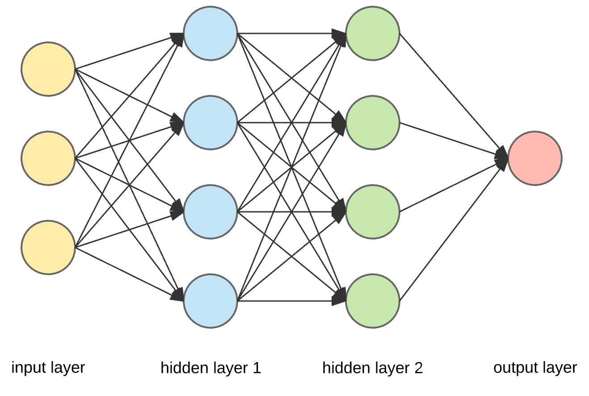

- 00 开篇词 从这里开始，带你走上硅谷一线系统架构师之路.md
- 01 为什么MapReduce会被硅谷一线公司淘汰？.md
- 02 MapReduce后谁主沉浮：怎样设计下一代数据处理技术？.md
- 03 大规模数据处理初体验：怎样实现大型电商热销榜？.md
- 04 分布式系统（上）：学会用服务等级协议SLA来评估你的系统.md
- 05 分布式系统（下）：架构师不得不知的三大指标.md
- 06 如何区分批处理还是流处理？.md
- 07 Workflow设计模式：让你在大规模数据世界中君临天下.md
- 08 发布_订阅模式：流处理架构中的瑞士军刀.md
- 09 CAP定理：三选二，架构师必须学会的取舍.md
- 10 Lambda架构：Twitter亿级实时数据分析架构背后的倚天剑.md
- 11 Kappa架构：利用Kafka锻造的屠龙刀.md
- 12 我们为什么需要Spark？.md
- 13 弹性分布式数据集：Spark大厦的地基（上）.md
- 14 弹性分布式数据集：Spark大厦的地基（下）.md
- 15 Spark SQL：Spark数据查询的利器.md
- 16 Spark Streaming：Spark的实时流计算API.md
- 17 Structured Streaming：如何用DataFrame API进行实时数据分析_.md
- 18 Word Count：从零开始运行你的第一个Spark应用.md
- 19 综合案例实战：处理加州房屋信息，构建线性回归模型.md
- 20 流处理案例实战：分析纽约市出租车载客信息.md
- 21 深入对比Spark与Flink：帮你系统设计两开花.md
- 22 Apache Beam的前世今生.md
- 23 站在Google的肩膀上学习Beam编程模型.md
- 24 PCollection：为什么Beam要如此抽象封装数据？.md
- 25 Transform：Beam数据转换操作的抽象方法.md
- 26 Pipeline：Beam如何抽象多步骤的数据流水线？.md
- 27 Pipeline IO Beam数据中转的设计模式.md
- 28 如何设计创建好一个Beam Pipeline？.md
- 29 如何测试Beam Pipeline？.md
- 30 Apache Beam实战冲刺：Beam如何run everywhere_.md
- 31 WordCount Beam Pipeline实战.md
- 32 Beam Window：打通流处理的任督二脉.md
- 33 横看成岭侧成峰：再战Streaming WordCount.md
- 34 Amazon热销榜Beam Pipeline实战.md
- 35 Facebook游戏实时流处理Beam Pipeline实战（上）.md
- 36 Facebook游戏实时流处理Beam Pipeline实战（下）.md
- 37 5G时代，如何处理超大规模物联网数据.md
- 38 大规模数据处理在深度学习中如何应用？.md
- 39 从SQL到Streaming SQL：突破静态数据查询的次元.md
- 40 大规模数据处理未来之路.md
- FAQ第一期 学习大规模数据处理需要什么基础？.md
- FAQ第三期 Apache Beam基础答疑.md
- FAQ第二期 Spark案例实战答疑.md
- 加油站 Practice makes perfect！.md
- 结束语 世间所有的相遇，都是久别重逢.md
38 大规模数据处理在深度学习中如何应用？
你好，我是蔡元楠。
今天我要与你分享的主题是“大规模数据处理在深度学习中如何应用？”。
“深度学习”这个词，既是一个人工智能的研究领域，也概括了构建人工神经网络的技术方法。2012年的AlexNet，2015年的Google Inception V3级数式地打破ImageNet计算机视觉比赛的最高纪录，2017年亮相的AlphaGo更是掀起了全球的深度学习风暴。
在Google，深度学习系统被应用在预测广告的点击率、推荐用户可能喜爱的视频、生成更接近人类的机器发声、自动生成邮件回复等几乎所有产品线。

很多人并不理解深度学习技术，我经常见到这样几种误区：
- 觉得深度学习是最近几年才兴起的技术；
- 觉得深度学习只是一个技术时髦（就像今年流行Python，明年流行Go语言一样）；
- 觉得深度学习只是算法模型。
要打破这些误区，我们必须深刻地理解超大规模数据在深度学习的发展中到底扮演了一个怎样的角色。
大规模数据在深度学习发展中扮演的角色
事实上，类似于模拟神经网络的计算机方法早在20世纪60年代就被提出来了。
当时通信领域大神香农也在神经网络领域有所涉猎。但是在60年代到90年代的几十年间，深度学习虽然想法新颖、听起来很好，但是在实际上，人们发现以当时的计算能力根本没法训练神经网络。反而是像决策树，SVM等非神经网络的方法大放异彩。
所以，从20世纪下半叶到2010年代究竟是什么让深度学习成了世界的焦点呢？一根火柴是点不着的，只有把一根火柴扔进汽油罐里里才会爆炸。想要知道这个答案，我们需要结合技术发展的背景来看最近的十年有哪些改变？
芯片技术处在摩尔定律的末期，几乎每两年翻一番，云计算服务的兴起使得强大的计算能力变得容易获得。互联网的快速发展和以2007年发布iPhone为标志的移动互联网时代的到来，使得互联网用户的数量和使用时长都翻了好几倍，科技公司因此积累了比以往多得多的数据。
讲到这里，你肯定明白了，正是因为强大的计算能力和大规模数据突然变得可获得，人们一下子发现曾经遥不可及的神经网络方法真的可以被计算了，才引发了深度学习的爆发性发展。
即使是现在也是如此，在数据量并不充足的人工智能任务上，人们会发现还是传统方法表现更好，然而一旦数据量上来了，深度学习就会碾压式地击败所有传统方法。
理解了大规模数据在深度学习发展中扮演的主要角色，我们再来看看为什么说，以大规模数据驱动的深度学习将是一次不可逆的影响深远的技术变革。
这就得从最近十年哪些“没有变”说起。
我们看到，计算机的发展从有一个房子那么大的巨型机，到个人电脑，再到智能手机。表面上看，计算机体积变得更小了，然而实际上是人们想要计算更个性化、更私密的需求没有改变。而只有深度学习才能满足更个性的计算需求，无论是给你推荐你喜欢的音乐，还是分析你的健康记录。
工业生产的发展从人力，到蒸汽机，再到电能和计算机。人们想要解放繁重的重复劳动的需求从来没有改变。而只有深度学习才能满足下一波劳动力的解放，也就是重复的脑力劳动。这些影响力都是别的技术时髦远远不能相比的（比如今年流行这个前端框架，明年流行那个前端框架，今年流行这个语言，明年流行那个语言）。我们看一个技术的影响力，就是看这个技术能够解决哪些曾经不能解决的问题。而深度学习技术所能解决的新问题，几乎涵盖了人类社会发展的各个方面。
在了解了深度学习的巨大影响力和大规模数据在深度学习技术中的重要角色后，我们结合案例来具体看看，在一个由深度学习驱动的技术产品或者技术系统周期中，大规模数据处理技术是怎样被应用的呢？
最后你会发现，大规模数据处理技术几乎无处不在。你甚至可能会感叹，深度学习系统实际上就是一个复杂的大规模数据处理系统。事不宜迟，我们现在就来看看。
一个深度学习驱动的产品周期一般按时间顺序分为这样几个阶段：
- 数据搜集整理；
- 深度学习模型开发；
- 部署和测试深度学习模型；
- 形成数据闭环反馈不断优化深度学习模型。
数据搜集整理 (Data Curation)
数据搜集整理就是针对你需要训练的深度学习问题收集所需要的数据。
比如，你要研发在线广告点击率的预测模型，你可能需要搜集用户的网页点击行为历史，网页链接的属性等数据。
如果你要研发之前提到的美团股价预测模型，你可能需要去搜集街上的美团外卖电动车图片。这种数据搜集整理的任务时间跨度可能很大，也可能涉及很多非技术的因素，比如需要去和合作公司谈判数据授权等等。
数据的搜集整理是任何AI系统开发的第一步，可以说没有数据就没有AI。
要注意，并不是只有监督学习需要高质量的数据，实际上无监督学习也需要高质量的数据。比如，在自然语言理解的无监督预训练步骤，你也需要根据训练任务选择高质量的文本库，比如中文文本库，或者医学文本库（如果你要针对医学病例训练模型）。
抛开这些非技术因素不谈，数据搜集整理的技术复杂度也是非常高。我们往往用data massage——给数据按摩，来形容数据搜集整理技术工作是一份并不容易的，十分需要技巧和力量的工作。
因为你的数据来源会非常多，每个数据源的格式可能都不一样，不同数据源提供的数据种类也会有不同，数据源直接甚至可能会相互矛盾。在实际应用中，数据搜集整理的技术部分经常是由很多个大规模数据处理流水线组成。

在我们在第1讲中介绍的美团外卖电动车搜集案例中，我们就介绍了数据搜集系统的复杂度。的确，一般来讲，你至少需要多个数据处理流水线去完成以下几项任务：
- 消化外面的数据；
- 对数据进行各种转换，变成你想要的结构和格式；
- 清理数据，比如不准确的数据要找出来，送给人工单独审核和处理；
- 如果由人工审核，你还需要数据处理流水线能够处理人工审核结果。
这些数据处理的流水线可能用一整个专栏的篇幅都无法罗列完。你看在计算机视觉领域鼎鼎有名的ImageNet，到现在已经花了10多年整理收集，才取得现在这样非常干净、丰富、准确的状态。你就能明白，数据搜集整理本质上就是大规模的训练样本数据处理。
深度学习模型开发 （Modeling）
看到这，你可能会觉得：深度学习的模型开发阶段是不是总算没有数据处理什么事了？看起来都是算法啊，数学啊？完全不是的。
当我们在实验深度学习模型时候，许多时间都花在了数据处理上。经常要做的事情是，先去分析一下拿到手上的样本数据。
比如，在使用皮肤的照片分类良性的痣还是黑色素瘤时，肯定会先去看一下样本中良性和恶性的分布比例。如果分布很不均匀，比如黑色素瘤的样本只有1%时，很容易影响我们模型的表现。那就需要考虑别的方法，比如使用不同的损耗函数，过采样较少的分类样本等等。
除了数据分析以外，许多深度学习模型的架构设计都需要大规模的数据处理能力。比如，在hard negative mining技术中，我们需要使用数据处理技术把检查点的深度模型在数据集上都跑一遍，来找出值得加入训练集的样本。
部署和测试深度学习模型 （Deployment）
部署和测试深度学习模型，其实就是把模型工程化为一个提供结果预测的服务。这样的服务，本质上就是一个数据处理的流水线，它可以是批处理流水线，也可以是流处理流水线。
比如，我们部署广告点击率预测模型时，最终我们肯定是根据用户的浏览场景选择点击率高的广告，这样才能去展示点击率高和用户的网页浏览最相关的广告。然而可供选择的候选广告可能有几千万个。如何快速地把所有这样几千万个候选广告的点击率全部预测一遍，这就是一个大规模数据的批处理问题。
具体提供深度学习模型推理服务的可能是TensorFlow Servo。但是真正用在生产环境时，我们都需要把Servo封装成一个大规模数据处理系统。
形成数据闭环反馈不断优化深度学习模型（Feedback and improvement)
你的深度学习产品上线后，依然需要大规模数据处理技术。比如你提供自动聊天回复功能，能够根据一个微信对话的上下文自动推荐一些合适的回复。如果别人说“明天一起吃饭好不好？”，你可以推荐回复“好”。
那么，像这样的功能上线后，你怎样评估这个深度学习模型的效果呢？你需要去跟踪用户与这个功能的交互。
比如，有多少用户会去选择你推荐的回复，又有多少用户会不选择你推荐的回复而自己打字呢？通过这些追踪的用户行为，你就能利用大规模的数据处理技术，不断地为你的深度学习模型提供更多现实的数据，去进一步训练改进模型。也能利用用户行为去评估当前模型的表现。
小结
这一讲，我们首先学习了大规模数据在深度学习几十年的发展中所扮演的至关重要的角色。然后我们一起看了在一个深度学习驱动的产品周期里的各个阶段，有哪些大规模数据处理的任务。相信通过这一讲，你一定能感受到大规模的数据处理技术就是深度学习系统的奠基石。
思考题
除了这一讲中提到的这些应用，你还能想到哪些大规模数据处理技术在深度学习系统中的应用呢？
欢迎你把自己的学习体会写在留言区，与我和其他同学一起讨论。如果你觉得有所收获，也欢迎把文章分享给你的朋友。
© 2019 - 2023 Liangliang Lee. Powered by gin and hexo-theme-book.